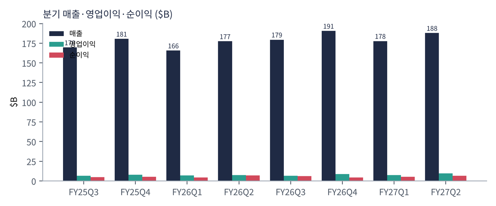
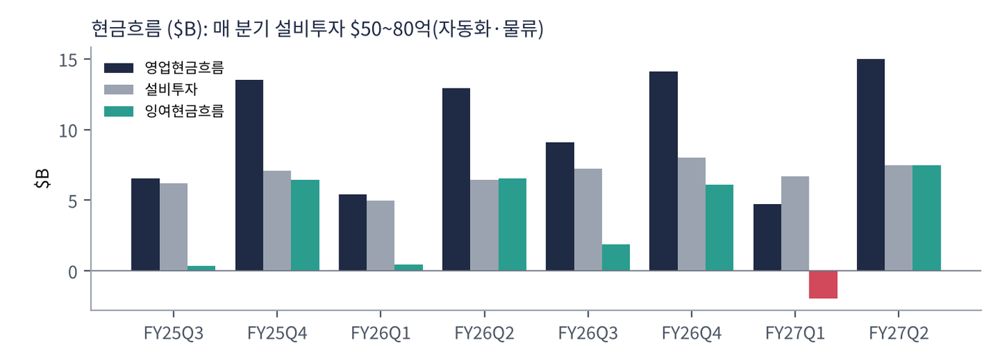
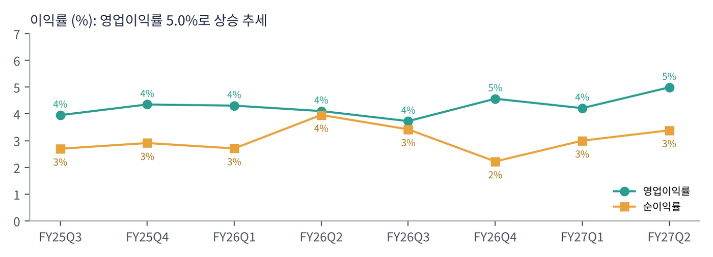
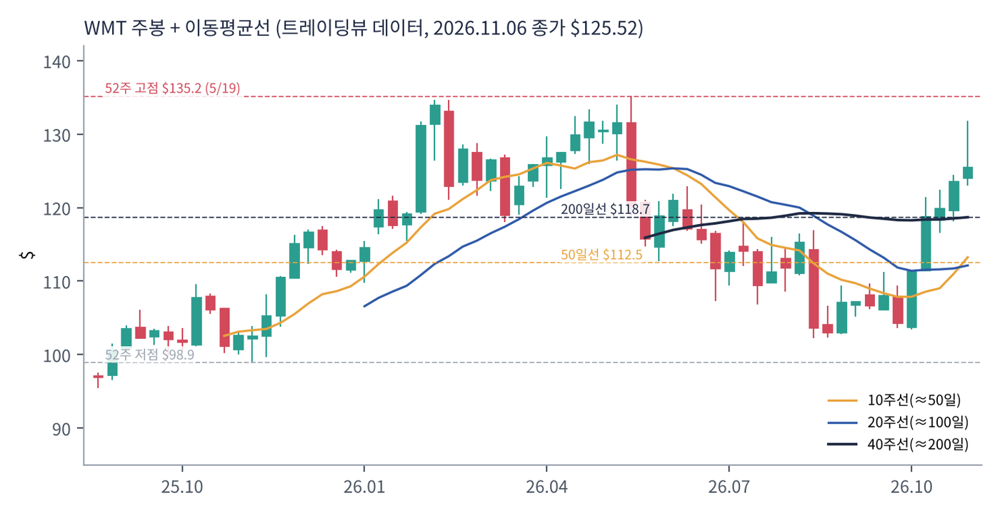
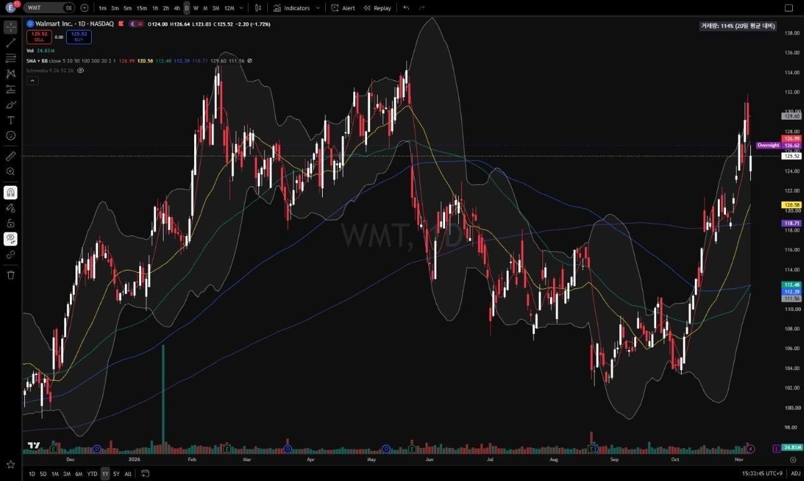
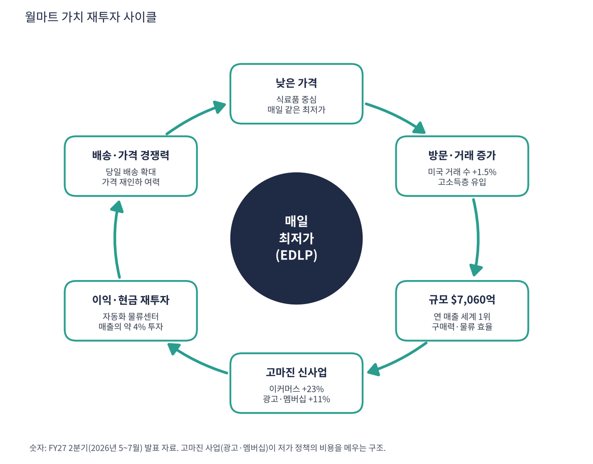

월마트는 매출 기준 세계 최대 기업이다. 미국 4,600여 개 매장(월마트), 회원제 창고형 매장(샘스클럽), 멕시코·캐나다·중국·인도(플립카트) 등 해외 사업을 갖고 있다. 과거 '싸게 파는 대형마트'였지만 지금은 이커머스·광고·멤버십으로 돈을 버는 '유통 플랫폼'으로 바뀌는 중이다. 2025년 12월 상장 거래소를 뉴욕증권거래소에서 나스닥으로 옮겼다.
| 항목 | 내용 |
|---|---|
| 종목 | Walmart Inc. (WMT) · NASDAQ · 1962년 · 본사 아칸소주 벤턴빌 |
| 시가총액 | 약 $9,958억 · PER 45.5배 · 배당수익률 0.77% (트레이딩뷰, 11/6 종가 $125.52) |
| 최근 분기(FY27 2Q, 2026년 5~7월) | 매출 $1,879억(+5.9%), 영업이익 $94억, EPS $0.80 |
| FY27 가이던스 | 매출 +4~5%, 조정 영업이익 +7~8.5%, 조정 EPS $2.80~2.87 |
| 다음 실적 | FY27 3분기 실적 약 10일 뒤(11월 중순) |
| 직책 | 인물 | 역할·특징 |
|---|---|---|
| CEO | 존 퍼너 | 2026년 2월 CEO 취임(더그 맥밀런 후임). 월마트 미국 CEO 출신, 매장 직원으로 시작한 '현장형' 리더 |
| CFO | 존 데이비드 레이니 | 가이던스·투자 배분 담당 |
| 이사회 | 월턴 가문 | 창업주 가문이 최대주주 — 초장기 경영 관점 |
경영 스타일: '매일 최저가(EDLP)를 지키면서 고마진 사업을 키운다'. 월마트는 가격으로 고객을 모으고, 모인 고객에게서 광고(월마트 커넥트)·멤버십(월마트+)·마켓플레이스 수수료로 돈을 번다. 매출의 약 4%를 매년 자동화 물류센터·매장 재단장·배송망에 투자한다. 2분기 가이던스에서 회사는 관세·소비 둔화 우려 속에서도 매출 전망을 올렸고, 이커머스 흑자 전환 이후 이익률 상승이 계속되고 있다.
로봇 자동화 물류센터, 매장을 배송 거점으로 쓰는 '매장 풀필먼트'(미국 인구 대부분에 당일 배송), 1억 명이 넘는 고객 구매 데이터로 광고 사업 운영.
매장·온라인·배송·광고·금융(원페이)을 묶어 아마존과 정면 경쟁. 고소득 가구까지 고객층을 넓혀 '싼 곳'이 아니라 '편한 곳'이 되는 것.
| 분기 | 매출 | YoY | 영업이익 | 이익률 | 순이익 | 영업현금 | 설비투자 | EPS | 특이 사항 |
|---|---|---|---|---|---|---|---|---|---|
| FY25Q3 | $1,696억 | – | $67.1억 | 4.0% | $45.8억 | $65.6억 | $61.9억 | $0.57 | |
| FY25Q4 | $1,806억 | – | $78.6억 | 4.4% | $52.5억 | $135억 | $70.9억 | $0.66 | 연말 성수기 |
| FY26Q1 | $1,656억 | – | $71.3억 | 4.3% | $44.9억 | $54.1억 | $49.9억 | $0.56 | |
| FY26Q2 | $1,774억 | – | $72.9억 | 4.1% | $70.3억 | $129억 | $64.2억 | $0.88 | 투자 평가이익 |
| FY26Q3 | $1,795억 | +5.8% | $67.0억 | 3.7% | $61.4억 | $91.0억 | $72.2억 | $0.77 | |
| FY26Q4 | $1,907억 | +5.6% | $87.1억 | 4.6% | $42.4억 | $141억 | $80.2억 | $0.53 | 투자 평가손실 |
| FY27Q1 | $1,778억 | +7.3% | $74.9억 | 4.2% | $53.3억 | $47.4억 | $66.8억 | $0.67 | |
| FY27Q2 | $1,879억 | +5.9% | $93.8억 | 5.0% | $63.7억 | $150억 | $75.0억 | $0.80 | 이커머스 +23% |


흐름 요약: 매출은 매년 4~6% 꾸준히 늘고, 영업이익률은 4%대에서 2분기 5.0%로 올라섰다. 순이익이 분기마다 들쭉날쭉한 것은 보유 투자 지분의 평가손익 때문이라 영업이익을 봐야 한다. 설비투자는 분기 $50~80억으로 매우 크며, 최근 4분기 FCF는 약 $135억(영업현금 $429억 − 설비투자 $294억)이다.
| 부문·사업 | 돈을 버는 방식 | 비중·성장 |
|---|---|---|
| 월마트 미국 | 식료품·생활용품·약국 중심 매장 + 온라인 주문·배송 | 매출 약 68% (FY25 연간 기준), 동일점 매출 +2.6% |
| 해외 | 멕시코(왈멕스), 캐나다, 중국, 인도(플립카트·폰페) | 약 18% |
| 샘스클럽 | 회원제 창고형 매장 | 약 13% |
| 글로벌 이커머스 | 온라인 판매·마켓플레이스·배송 (부문 횡단) | +23%, 매출의 24% |
| 고마진 사업 | 광고(월마트 커넥트), 멤버십·기타 수입 | 멤버십·기타 +11.2% (회원비 +17%) |

2분기 매출총이익률은 25.4%(+0.96%p)로 올랐다. 미국 동일점 매출 +2.6%는 거래 수 +1.5%, 객단가 +1.1%로 구성되고, 약가 규제(최대공정가격 제도)로 약국 매출이 약 1.25%p 깎인 숫자다. 매출 성장은 5%대지만, 이익 성장은 광고·멤버십 같은 고마진 사업이 끌고 간다.
월마트 창업주 샘 월턴의 원칙 '고객의 돈을 아껴 더 나은 삶을 살게 한다'는 지금도 회사의 목적이다. 차이는 이제 그 수단이 매장이 아니라 데이터·배송·플랫폼이라는 점이다.
| 축 | 내용 |
|---|---|
| 가격 리더십 | EDLP 유지 — 고객 유입의 출발점 |
| 옴니채널 | 매장 = 물류센터. 당일·몇 시간 배송 |
| 고마진 플랫폼 | 광고·멤버십·마켓플레이스·금융으로 이익률 상승 |
| 자동화 | 물류·매장 자동화로 인건비 비중 축소 |


위: 트레이딩뷰 주봉 데이터로 재구성. 아래: 트레이딩뷰 공개 차트 일봉 캡처(작도 숨김).
| 이동평균 | 값 | 종가 대비 | 해석 |
|---|---|---|---|
| 5일선 | $126.99 | -1.2% | |
| 20일선 | $120.58 | +4.1% | 10월 중순 이후 급반등 |
| 50일선 | $112.48 | +11.6% | 아직 200일선 아래(데드크로스 상태) |
| 100일선 | $112.39 | +11.7% | |
| 200일선 | $118.71 | +5.7% | 11월 재돌파 |
5월 $135 고점 후 9~10월 $102까지 25% 조정, 10월 중순부터 3주 만에 $125로 급반등해 200일선을 회복했다. 단기 반등은 강하지만 50일선이 아직 200일선 아래(데드크로스)라 중기 추세 전환은 미완성이다.
| 규칙 | 기준 | 현재 값 | 신호 |
|---|---|---|---|
| 장기 추세 필터 | 종가 vs 200일선 | $125.52 > $118.71 | 매수 |
| 중장기 교차 | 50일선 vs 200일선 | $112.48 < $118.71 | 매도 |
| 단기 교차 | 20일선 vs 50일선 | $120.58 > $112.48 | 매수 |
| 돈키언 채널 | 55일 고가 $131.82 / 저가 $102.15 | 중간값 $116.98 위 | 매수 |
| 1개월 모멘텀 | 21거래일 수익률 | +13.5% (기준 $110.56) | 매수 |
| 3개월 모멘텀 | 63거래일 수익률 | +11.4% (기준 $112.66) | 매수 |
| 6개월 모멘텀 | 126거래일 수익률 | -3.8% (기준 $130.43) | 매도 |
| 12개월 모멘텀 | 252거래일 수익률 | +23.7% (기준 $101.47) | 매수 |
| 종합 (8개 평균) | +0.50 | 매수 우위 |
해석: +0.50(매수 우위). 매도 신호 2개(50/200 교차, 6개월)는 5월 고점의 잔상이다. 50일선이 200일선을 넘는 골든크로스가 나오면 +0.75로 오른다. 14일 ATR $3.22 (2.6%).
| 가격 | 무엇이 바뀌나 | 의미 |
|---|---|---|
| $130.4 | 6개월 기준가 회복 | 점수 +0.75 |
| 50일선 > $118.7 | 골든크로스(시간 문제) | 점수 +0.75~1.00 |
| $118.7 | 200일선 이탈 | 점수 0 이하 |
| $117.0 | 돈키언 중간값 | 반등 실패 |
약 10일 뒤 3분기 실적이 변동성 이벤트다(가이던스: 매출 +3.0~3.75%, 조정 EPS $0.62~0.64). 실적 전 추격보다 200일선($118.7)~20일선($120.6) 재시험 시 분할 매수, 50일선($112) 이탈 시 손절이 합리적이다.
| 악재 요인 | 내용 | 강도 |
|---|---|---|
| 밸류에이션 | PER 45배, PEG 6~11. 실적이 기대에 조금만 못 미쳐도 하락 폭이 클 수 있음 | 높음 |
| 관세·원가 | 수입 상품 관세 → 가격 인상 또는 마진 희생 | 중간 |
| 약가 규제 | 약국 매출에 최대공정가격 제도 영향(동일점 약 -1.25%p) | 중간 |
| 아마존 경쟁 | 배송 속도·광고 시장 경쟁 | 중간 |
| 소비 둔화 | 저소득층 소비 위축(고소득층 유입이 일부 상쇄) | 참고 |
| 티커 | 회사 | 시가총액 | PER(TTM) | PEG | P/S | EPS 성장(YoY) |
|---|---|---|---|---|---|---|
| WMT | 월마트 | $996B | 45.5배 | 11.20 | 1.38배 | +4% |
| COST | 코스트코 | $467B | 50.8배 | 3.58 | 1.53배 | +14% |
| AMZN | 아마존 | $2,804B | 21.0배 | 0.27 | 3.37배 | +75% |
| TGT | 타깃 | $72B | 16.4배 | 1.33 | 0.67배 | +12% |
| KR | 크로거 | $40B | 36.6배 | – | 0.28배 | -53% |
| DG | 달러제너럴 | $30B | 17.4배 | 0.42 | 0.69배 | +42% |
| BJ | BJ's 홀세일 | $14B | 23.9배 | 4.74 | 0.62배 | +5% |
비교 결론: 월마트 PER 45.5배는 아마존(21.0배)의 2배가 넘는다. 아마존은 EPS +75%로 PEG 0.27('적극 매수' 구간)인데, 월마트는 PEG 11.2다. 유통 피어(타깃 16배, 달러제너럴 17배)와 비교해도 약 3배다. 성장 대비 가격으로는 피어 중 가장 비싸다. 비슷하게 비싼 곳은 코스트코(PER 50.8배)뿐이다.
월마트는 적자 기업이 아니다. 최근 4분기 순이익 $221억, FCF $135억으로 현금 런웨이는 의미가 없다.
| 지표 | 값 | 의미 |
|---|---|---|
| 최근 4분기 영업현금 | $429억 | SEC XBRL |
| 최근 4분기 설비투자 | $294억 | 매출의 4% |
| 잉여현금흐름(FCF) | +$135억 | 트레이딩뷰 $135억과 일치 |
| 시가총액 / FCF | 약 74배 | FCF 수익률 1.4% — 배당 0.77% |
| 회사 | P/S | 영업이익률 | 해석 |
|---|---|---|---|
| WMT | 1.35배 | 약 4.4% | TTM 매출 $7,358억 |
| 코스트코(COST) | 1.53배 | 약 3.9% | 회원제 |
| 타깃(TGT) | 0.67배 | – | 성장 정체 |
| 크로거(KR) | 0.28배 | – | 식료품 |
| 아마존(AMZN) | 3.37배 | 약 11% | 클라우드(AWS) 포함 |
해석: 유통업 P/S는 보통 0.3~0.7배다. 월마트 1.35배는 타깃의 2배, 크로거의 5배다. 시장은 월마트를 '마트'가 아니라 광고·멤버십·이커머스로 이익률이 계속 오를 플랫폼으로 보고 값을 매기는 중이다. 만약 영업이익률이 아마존처럼 장기적으로 6~7%까지 오른다면 지금 P/S가 정당화되지만, 4%대에 머무르면 비싸다.
| 지표 | 값 | 판정 |
|---|---|---|
| EBITDA (트레이딩뷰) | $474억 | 흑자 |
| EBITDA (직접 계산, TTM) | $474억 | 영업이익 $323억 + 감가상각 $151억 (일치) |
| EBITDA 마진 | 6.4% | 유통업 평균 수준 |
| 방식 | PER | EPS 성장률 | PEG | 판정 |
|---|---|---|---|---|
| 트레이딩뷰 (TTM) | 45.5배 | +4.1% | 11.2 | 기준 초과 |
| 직접 계산 (SEC 희석 EPS) | 45.3배 ($125.52 ÷ $2.77) | +3.7% ($2.67 → $2.77) | 12.2 | 기준 초과 |
| FY27 조정 EPS 가이던스 | 44.3배 ($125.52 ÷ $2.835) | +7.4% ($2.64 → $2.835) | 6.0 | 기준 초과 |
판정: PEG 11.2 → 기준을 크게 초과, '투자 적격' 아님. GAAP EPS는 지분 평가손익 탓에 성장률이 낮게 잡혀 PEG가 과장된 면이 있다. 그래도 회사 가이던스(조정 EPS +7.4%) 기준으로도 PEG 6.0이다. PER 44배에 이익 성장 7%는 7개 회사 중 성장 대비 가장 비싼 조합이다. 시장은 '앞으로 이익률이 계속 오른다'는 미래를 미리 사고 있다.

월마트 사이클은 낮은 가격이 고객을 모으고, 규모가 비용을 낮추고, 고마진 사업이 다시 가격을 낮출 여력을 만든다.
| 고리 | 현재 숫자 | 고리 강도 | 약해지는 신호 |
|---|---|---|---|
| ① 낮은 가격 | 식료품 가격 리더십 | 강함 | 관세로 가격 인상 불가피 |
| ② 방문·거래 증가 | 미국 거래 수 +1.5%, 고소득 가구 유입 | 강함 | 거래 수 감소 전환 |
| ③ 규모 | 연 매출 $7,064억(FY26) | 강함 | – |
| ④ 고마진 신사업 | 이커머스 +23%, 회원비 +17% | 강함 | 광고 성장 둔화 |
| ⑤ 이익·현금 재투자 | 설비투자 매출의 약 4% | 강함 | FCF 감소 |
| ⑥ 배송·가격 경쟁력 | 당일 배송 확대, 매출총이익률 +0.96%p | 진행 중 | 배송비 부담으로 이익률 정체 |
판단: 사이클의 모든 고리가 동시에 강하다. 문제는 사이클이 아니라 가격이다. 사이클이 이미 PER 44배에 반영돼 있다.